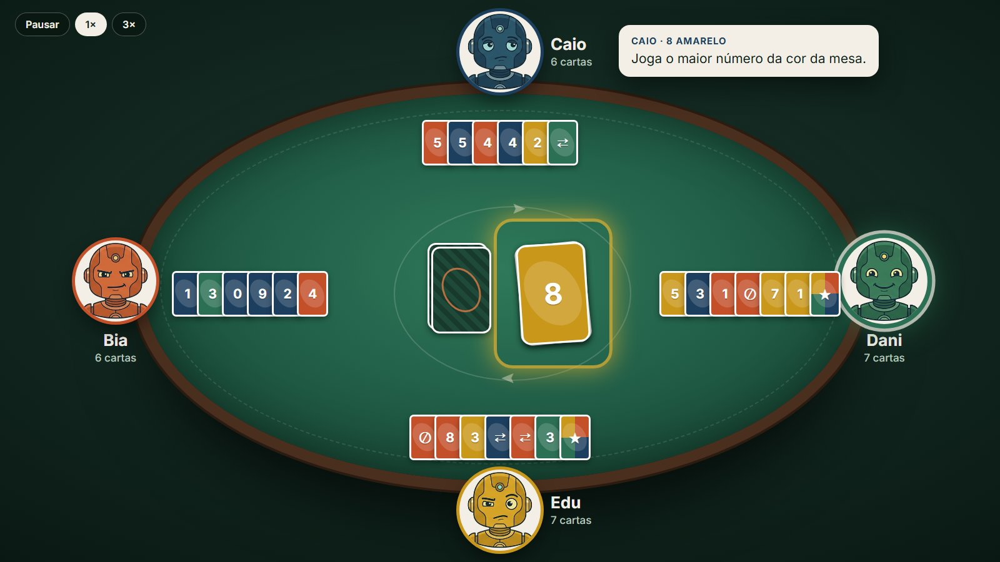
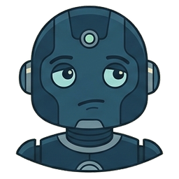
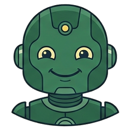
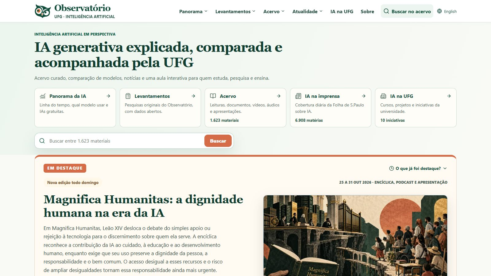

Uma professora de Física quer que a turma veja, e não só decore, como se calcula o centro de massa.
A gangorra que faz a conta
Arraste os pesos: a gangorra tomba e a fórmula se refaz com os números da tela.
Feita com o Claude Code ObservatórioUFG · Inteligência Artificial
ObservatórioUFG · Inteligência Artificial
IA trabalhando no seu computador
Um curso de 8 horas, em dois encontros, para quem trabalha com documentos, planilhas e fotos e não programa. Cada exemplo começa pelo problema de alguém e termina com a resposta da IA conferida. A aula, as gravações e os exercícios ficam todos aqui.
A aula é a apresentação inteira, tela a tela, com os exemplos gravados. As práticas trazem os arquivos para baixar e os pedidos prontos para copiar.
Uma gangorra que faz a conta, uma mesa de cartas com robôs, um portal inteiro. No fim, a revelação: tudo foi feito conversando com uma IA.
Ver os exemplosSeis problemas comuns resolvidos no Gemini: uma foto, um PDF, um Word, uma planilha, uma calculadora e nove comprovantes. Em cada um, o que conferir na resposta.
Ver os seis exemplosQuando o trabalho é uma pasta inteira, subir e baixar arquivo por arquivo cansa. Instalada, a IA lê e cria os arquivos onde eles já estão, e você acompanha cada passo.
Ver a instalação e as pastasNa aula, as peças aparecem primeiro e só no fim se conta quem fez. Aqui, cada uma vem com o problema que a originou. As duas primeiras funcionam de verdade: dá para abrir e mexer.
Uma professora de Física quer que a turma veja, e não só decore, como se calcula o centro de massa.
Arraste os pesos: a gangorra tomba e a fórmula se refaz com os números da tela.
Feita com o Claude Code
Falta gente para o jogo de cartas de domingo. Dá para ter adversários que pensam cada jogada sem nenhuma IA ligada?
A partida acontece no navegador e muda a cada jogo. Cada robô tem uma ficha com três regras, e o balão mostra a regra que ele usou.
Mesa e fichas com o Claude Code



Os robôs da mesa precisavam de rosto, e ninguém desenhou nenhum.
O Claude pediu ao Gemini, no Antigravity, quatro robôs com personalidades visíveis no rosto: um confiante, um pensativo, um alegre e um desconfiado.
Desenhados pelo Gemini
Um laboratório quer acompanhar tudo o que sai sobre IA, em português, sem ter uma equipe de programadores.
Mais de 1.600 materiais, as notícias de IA todo dia e aulas interativas. O código foi escrito com IA; a equipe escolhe e revisa cada conteúdo.
Observatório UFG-IAInclusive a apresentação da aula foi feita assim, conversando com uma IA em português comum.
Os seis exemplos foram gravados no Gemini, com uma conta da universidade, em 3 de novembro de 2026. Clique na imagem para ver a gravação. Nos vídeos, as esperas aparecem aceleradas, com um selo que diz quanto.
No fim da reunião, você fotografou a lousa com as tarefas da semana. Precisa mandar a tabela para a equipe, e ninguém quer digitar.
Em cerca de 10 segundos, a foto escrita a giz virou uma tabela com tarefa, responsável e prazo. As 7 tarefas ficaram iguais às da foto.
ConfiraConte as linhas da tabela e as da foto.
Você vai assinar o contrato de limpeza da sua padaria, de 5 páginas, e precisa entender valor, pagamento, multa e cancelamento antes de assinar.
Explicou valor, pagamento, atraso e cancelamento citando as cláusulas certas. Perguntado sobre produtos ecológicos, disse que o contrato não fala disso, em vez de inventar.
ConfiraAbra a cláusula citada e leia o trecho no PDF.
A coordenadora de um programa de oficinas precisa mandar amanhã o relatório anual para a direção, e ninguém revisou o texto.
Achou os 10 problemas do relatório. Na primeira resposta, escolheu sozinho qual número valia, sem marcar. No Word do segundo pedido, deixou as 3 divergências em vermelho, como pedido.
ConfiraEla pode acrescentar ou decidir o que não foi pedido.
A organizadora de um evento online recebeu a planilha do formulário com cidades escritas de vários jeitos e gente inscrita duas vezes. Precisa saber quantas pessoas vêm de cada cidade.
Nas 159 linhas, juntou as grafias das cidades e achou as 9 pessoas repetidas. Por canal e por oficina, porém, contou inscrições (159) em vez de pessoas (150), sem avisar.
ConfiraPessoas e linhas são contas diferentes.
Seis colegas dividiram as despesas da confraternização de fim de ano do setor. A Elisa não foi ao almoço, e ninguém sabe quem deve quanto a quem.
Para 6 pessoas e 8 despesas, montou uma calculadora com total de R$ 1.528,20, igual à conta feita à mão. Com o almoço trocado de R$ 780 para R$ 900, recalculou tudo (R$ 1.648,20).
ConfiraMude um valor e veja se a conta acompanha.
Você precisa prestar contas de 9 comprovantes de viagem fotografados com o celular, e um dos cupons está desbotado.
Leu as 9 fotos e chegou ao total certo, R$ 435,44. Acertou a data desbotada (13/07/2025), mas, num teste anterior, a mesma foto virou 19/07, sem aviso.
ConfiraCampo apagado na foto pode virar chute.
A lousa virou tabela, ele achou os 10 problemas do relatório, citou as cláusulas certas do contrato, a calculadora fechou com a conta feita à mão e o total dos comprovantes bateu.
Na oficina de projetos, contou inscrições em vez de pessoas, sem avisar. A resposta errada tem a mesma cara da certa.
Nos testes, a primeira resposta às vezes foi uma recusa (“Sou uma IA com base em texto”). O mesmo pedido, de novo, funcionou.
Cada arquivo sobe ao site e cada resultado volta como download. Com dezenas de comprovantes todo mês, isso vira subir, baixar e organizar tudo à mão.
A ferramenta do curso é o app ChatGPT, e a conta gratuita serve. Você abre uma pasta, faz o pedido e acompanha cada arquivo que ele lê ou cria.
No site chatgpt.com, baixe o ChatGPT para desktop. O instalador abre a Microsoft Store e, na primeira vez, o app prepara o Windows. Depois, o app abre o navegador para você entrar com a conta e volta pronto para o primeiro pedido. A gravação foi feita com uma conta gratuita.
Uma pesquisadora voltou de duas viagens com fotos de cupons e PDFs baixados em pastas diferentes. Precisa prestar contas das duas e não quer repetir o trabalho a cada viagem.
Na parte A, o agente organiza a pasta Viagens a trabalho e escreve a receita. Na parte B, os arquivos de Novos comprovantes entram soltos nela, e o certo é o agente criar uma pasta separada para a viagem nova. Vale olhar se o voucher e o Pix do hotel viram uma linha só e se o cartão de embarque fica fora do total.
A coordenadora de uma oficina precisa mandar um certificado para cada participante, no papel timbrado da instituição. A planilha tem 20 inscrições, e algumas pessoas se inscreveram duas vezes.
O modelo do Word tem o timbre, duas assinaturas e quatro campos entre colchetes. Vale contar os PDFs que aparecem na pasta e abrir os das quatro pessoas que se inscreveram duas vezes.
Alguém quer ver como os municípios de Goiás mudaram ao longo dos anos, com população, PIB e IDH, e não sabe programar.
O agente busca os dados nas fontes públicas e monta um mapa que abre num arquivo só. Vale clicar em Goiânia e conferir a área do Distrito Federal e os anos sem dado.
Curso do Observatório UFG-IA. Os arquivos dos exemplos são fictícios; as fotos de cupons são reais, com os dados pessoais cobertos por tarjas. Ficou com dúvida? A coruja no canto da tela responde.